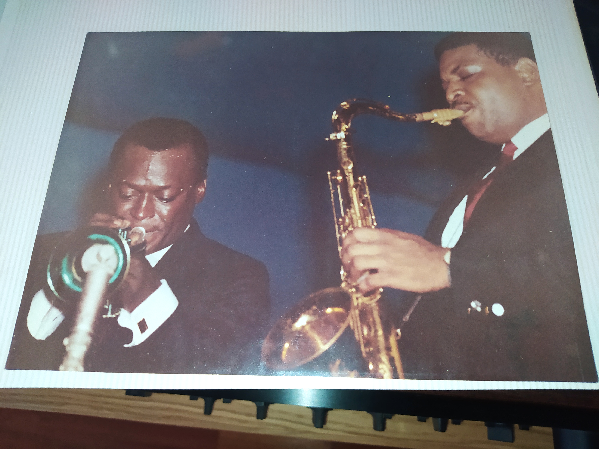
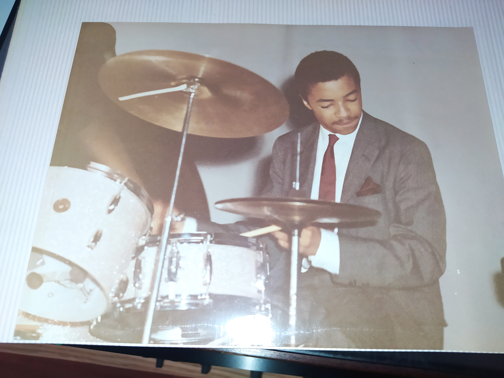

Hobbies:
- El Jazz;
- Kind of Blue
Probablement el millor àlbum de jazz de la història (no ho dic jo), va ésser composat per Miles Davis i va introduïr i establir en el món el concepte del jazz "modal" a l'any 1959. Dada curiosa: Miles no va anar amb partitures escrites a grabar aquest disc donat que volía espontaneitat, així que va anar-ji amb només apunts.
- Blue train
Jhon Coltrane, un dels millors saxofonistes que hi ha hagut a la història en aquest àlbum explora el jazz d'una manera virtuosa i clara la qual et deixarà bocabadat. Coltrane també era el saxofonista de Kind of Blue i gracies a la habilitat per escollir prodigis de miles Coltrane brillà com un diamant.
- La informàtica
- El Boxeo
- Floyd Mayweather
Aquest home és inhumà. El que el caracterítza és la seva defensa impecable i la seva capacitat per tenir sempre una sortida d'escape. 50 victòries 0 derrotes. Molta gent el considera aborrit de veure però jo el disfrutu com si no hi hagués un demà.
- Canelo Álvarez
Canelo és la definició de boxa mexicana. Juga sempre al contraatac i té una tecnica i una potencia descomunal. Fins fa poc tenía 50 victòries i 1 derrota. Endevineu contra quí va ser. Exacte! contra floyd Mayweather. Ara però n'ha perdut un altre recentment contra un rus de una categoría de pes més alta.
El jazz és un dels pilars fonamentals de la meva vida. Éssent així un estil que requereix d'alta abstracció musical i alt context per entendre'l, aquest génere de música m'ha aportat una quantitat de satisfacció i gratificació inimaginable. També crec que és una cosa que em vé de família ja que el meu vesavi i sobretot el meu avi els hi apassionava aquest estil. Tant és així que el meu avi té fotografíes del mateix Miles Davis (El Trompetista Rei del Jazz) en directe junt amb Cannonball Adderley i Tony Williams tocant en quintet els anys 60':


Tot i així però, el jazz ha sigut i sera per a mí una gran font de coneixement, plaer, sofisticació i disciplina, ja que és un estil molt difícil de tocar. En el jazz, al contrari que la música clàssica i altres estils semblants, no és tan rigurós. Cada interpretant pot donar el seu toc a la peça i provocar el sentiment desitjat a l'oïent. És aixó el que estimo del jazz, que cadascú pot tenir el seu estil i pot transmetre la seva passió. Per iniciar-se al jazz recomano els seguents albums:
De petit sempre m'han fascinat els ordinadors. El que més em cridava d'aquests dispositius era la seva capacitat per crear i per fer el que vulguis de manera tant aparentment "fàcil" ja que jo, sempre he sigut una persona molt creativa i crec que porto a la sang aquesta capacitat per fer noves coses. Em vaig interessar molt durant temporades que m'agafaven per el "Game Design" perquè de petit em fascinaven els videojocs. De fet, vaig estar apunt d'apuntarme a DAM VIOD en comptes de ciber, però després vaig descobrir el hacking i la ciberseguretat i vaig pensar que era una cosa que molava tant saber-ne que m'hi vaig tirar de cop. Quan dic molar no em refereixo a que vagi explicant que sóc un hacker, però que penso que són habilitats molt útils.
El meu objectiu en aquesta àrea és aprendre el màxim possible sobre creació de pàgines web, programació i administració de xarxes. Amb això ja estic satisfet.
Un dels esports que més m'agrada veure i practicar a la vegada és el boxeo. El boxeo requereix de molta disciplina mental i tot es pot resumir en una paraula: "flow". Si no téns "flow" en la boxa estàs acabat perdut i et deixaràn cao en 2 assalts. Per què? Bé, és una cosa que s'ha de veure amb els teus propis ulls però en general, si no tens flow et canses més, tens mala guardia, no hi ha bona técnica etc...
Apart, molta gent es pensa que la boxa només són braços. Aixó ho sentiras dir de la gent que no té ni puta idea ja que en el boxeo tota la força i tot el moviment, TOT surt de les cames No hi ha res que em complaeixi més que veure a algú fent sombres a l'aire amb una técnica impecable. Cagundeu auqesta gent és d'un altre planeta!
Parlant de gent d'un altre planeta, m'encanta veure debutar a bons boxejadors. Alguns d'ells són: